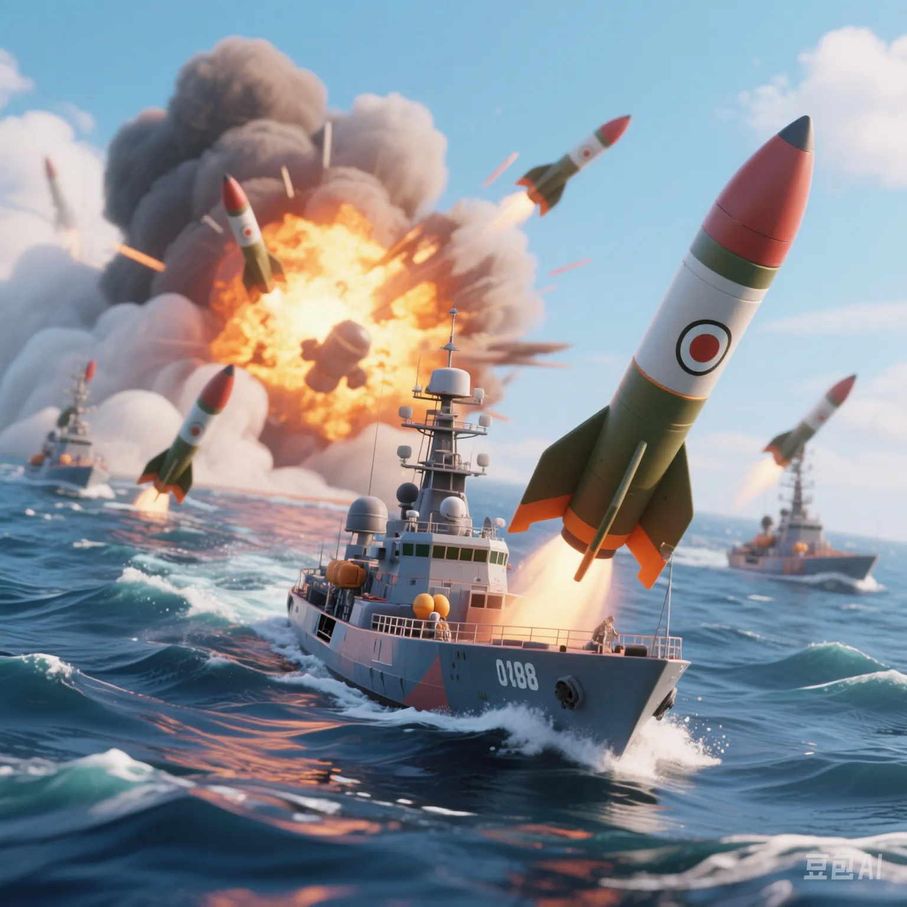

Houthi Rebels Threaten a Hundredfold Revenge: Will the Red Sea Route Become the Next Flashpoint?
PeaceLove.Top Insights :2025-04-17
A Missile Pierces the World's Busiest Shipping Lane
In April 2025, the Houthi rebels in Yemen announced a "hundredfold revenge" for the US - UK "aggression in Gaza" and successively attacked international merchant ships and US military vessels in the Red Sea route. Overnight, the Suez Canal - Red Sea route was forced to be rerouted, and global shipping costs soared.
Why Is the Red Sea So Important? 🌍
The Red Sea is located between Africa and the Arabian Peninsula and is one of the world's major arteries for energy and commodity logistics:
- Approximately 12% of global trade freight passes through the Suez Canal - Red Sea - Bab el - Mandeb Strait.
- Crude oil exports from the Middle East and container transportation from Asia to Europe highly depend on this route.
- Alternative routes require a detour around the Cape of Good Hope in Africa, increasing the voyage by two weeks and the transportation cost by 30%.
Who Are the "Houthi Rebels"? Why Are They Suddenly Launching All - out Attacks? 💣
The Houthi rebels are a Shia militia organization in Yemen, supported by Iran. Since the outbreak of the Gaza conflict in 2023, the Houthis have repeatedly attacked targets related to Israel and its allies in the name of "supporting Palestine". This attack in the Red Sea is regarded as a direct retaliation against the US - UK military intervention in Gaza and a strong challenge to the Middle East geopolitical order.
Will the US Airstrikes Ignite a Bigger "Flashpoint"? 💥
The US military recently carried out precision strikes on Houthi facilities, but the Houthis have intensified their actions, stating that "they will attack all Western merchant ships passing through". This has raised concerns:
- Will the conflict spread to larger axes such as Iran and Hezbollah in Lebanon?
- Will Arab countries such as Saudi Arabia and Egypt be forced to get involved?
- Will the game between China and the US in the Middle East become more public?
What Chain Reactions Will the World Face? 📉
- Volatile oil prices: The obstruction of the Red Sea route will affect crude oil exports from the Middle East. WTI and Brent crude oil prices have exceeded $100 per barrel.
- Global commodity price hikes: The increase in maritime insurance premiums and rerouting costs has led to delays in the import of goods such as furniture, automobiles, and machinery.
- Increased pressure on Asian exporters: Shipping pressure for exports from China, South Korea, and Japan to Europe has soared, and foreign - trade enterprises are facing the risk of contract defaults.
What Role and Choices Does China Have? 🧭
Facing the escalating situation in the Middle East, China is promoting the following strategies:
- Strengthening bilateral diplomatic communication with Iran and Saudi Arabia to stabilize the regional situation.
- Accelerating the construction of diversified channels for the "China - Europe Railway Express" on land and the "Maritime Silk Road".
- Promoting RMB settlement and de - dollarization in energy transactions to avoid financial shocks.
Conclusion: The World Is Once Again on Edge Due to the "Oldest Flashpoint"
The crisis in the Red Sea is not just a geopolitical conflict but also a pain point in the global supply chain in the era of globalization. When missiles fly over the shipping lane, perhaps we should re - examine a question: "In this interconnected world, no war is just someone else's business."